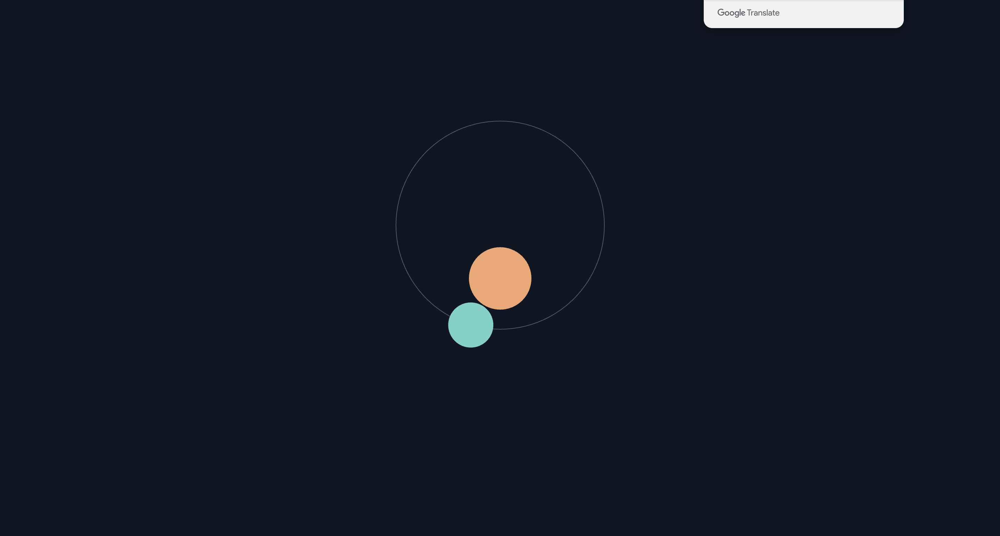
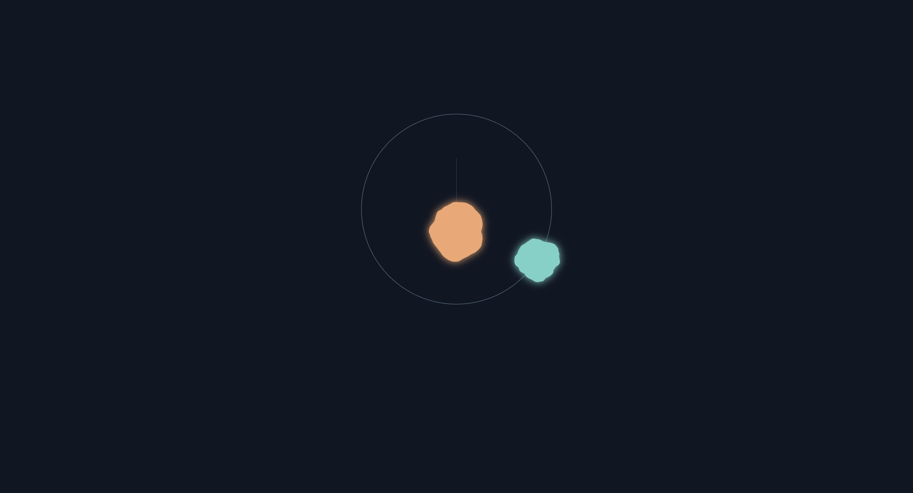
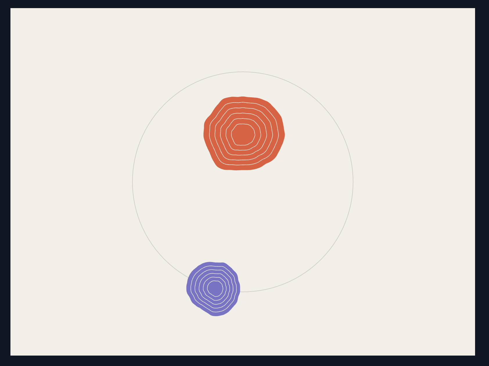

Tidal Orbit
By Zhenlian Wu
I created an animation with two moving shapes. One moves in a circle, and the other moves up and down. These images show how my work developed.
01 — Starting with Circles
I started with two circles on a dark background. I added a circular path to plan the movement.
02 — Circular Motion
I used sine and cosine to move the turquoise circle around the path. The orange circle stayed still.
03 — Moving Up and Down

I used sine to move the orange circle up and down. At this stage, both movements used the same frequency.
04 — Different Rhythms
I changed the frequency and starting phase of the up-and-down movement. The two movements no longer stayed synchronized.
05 — Organic Shapes
I used Perlin noise to change the outlines. The shapes became less regular and more organic.
06 — Testing Glow

I added soft glows around the shapes. I thought the edges looked too blurry, so I tried a different style.
07 — Final Changes

I changed the background and colors, added lines inside the shapes, and slowed the movements. I preferred this clearer version.
Final Animation
The purple shape moves in a circle, while the red shape moves up and down. They use different frequencies, and Perlin noise slowly changes their outlines.